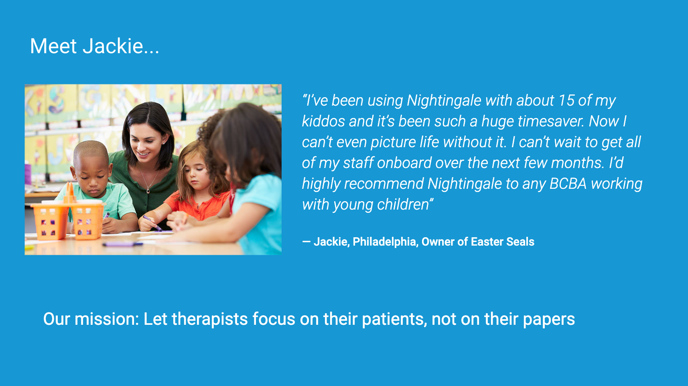
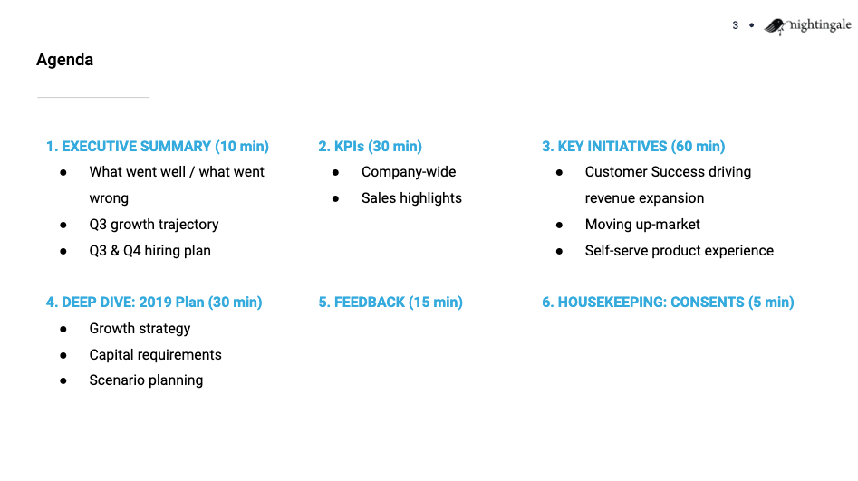
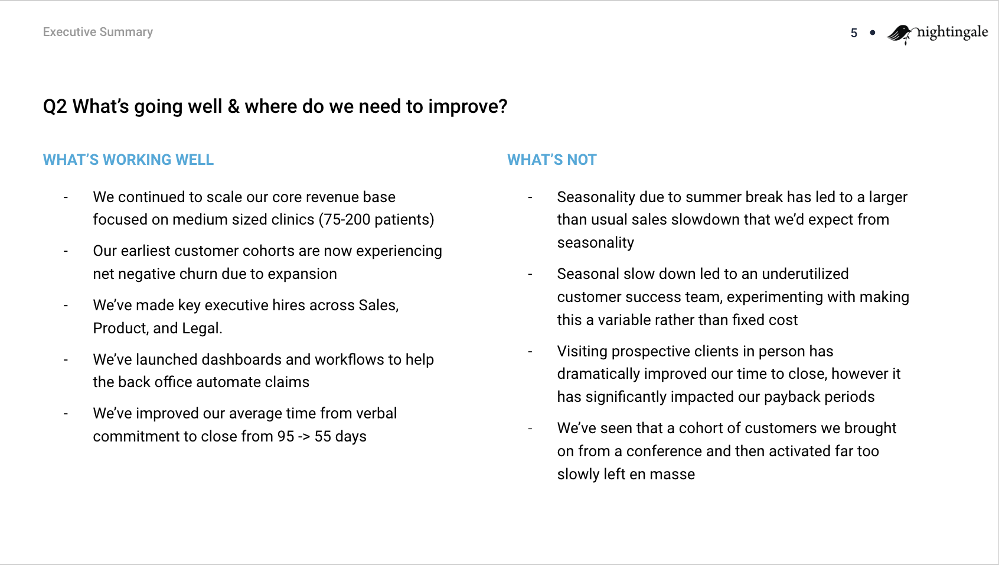
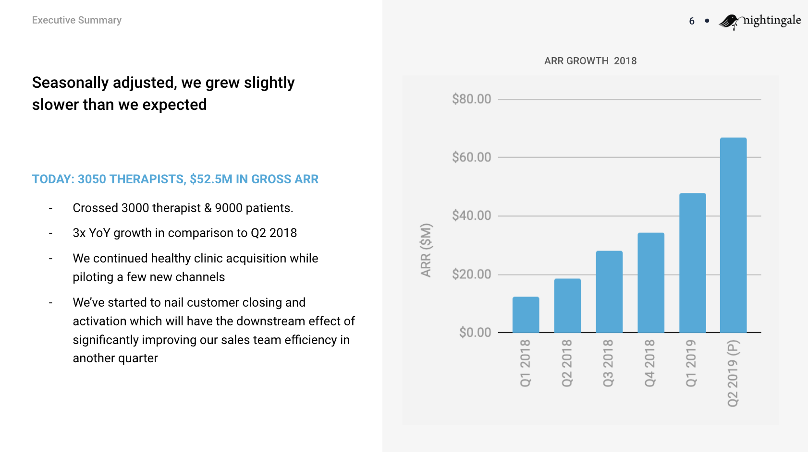
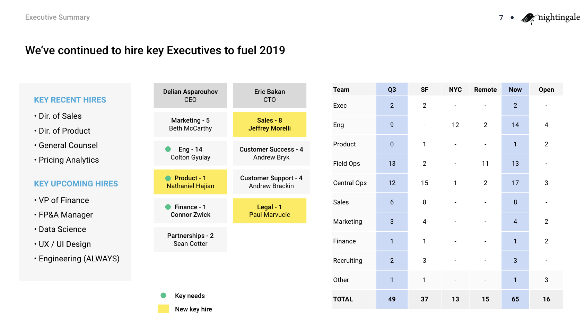
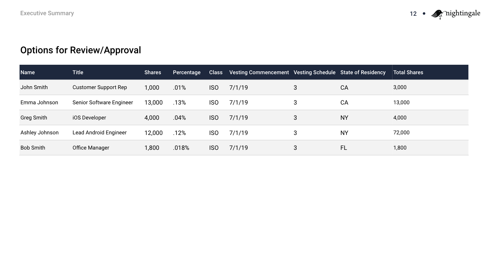

Lessons from Keith Rabois Essay 4: How to run an Effective Board Meeting and make an Effective Board Deck
published June 24th, 2019
This week’s essay is on how to prepare for a board meeting, though many of the lessons apply to internal reviews as well.
Over the past two years, I’ve attended 100+ board meetings that range from companies that are just a handful of people to companies with over one thousand employees that are preparing to go public. These board meetings vary significantly in quality of discussion and participants, but there is a clear and strong correlation between the companies that have positive long term outcomes and those that properly prepare for and structure their board meetings. With proper preparation you can extract much more value from your board which can have an outsized impact on your company.
I noticed that the best board meetings and board decks follow the same formula, which I’ll discuss here. I’ve also created a theoretical board deck based on my own startup from 2014 as an example that I linked to at the bottom of the essay.
Summary
- High quality board members can have a massive impact on your trajectory, and you can recruit independent ones if you don’t love the ones you got from your financing
- Get feedback on what topics to cover at least two weeks before the board meeting from your directors
- Spend a week preparing the board deck, covering your mission, overall thoughts, KPIs, topics you agreed on with your board, and housekeeping
- Pay attention to all of the little details when you run the meeting, make printouts of the deck, make sure the room is well-lit etc.
- Bring your team into the meeting to present their initiatives so they get exposure to the board and vice versa
- Step out of the room so your board members can agree on overall feedback to give you
- Present the board deck and the feedback you received to your whole team
Step 1: Spend time building an effective board
Startup boards typically include one or more founders representing the common shareholders of the company, a seat for each major investor (usually the lead of each financing round), and one or more independent board directors. Importantly, these independent directors are not the “advisory board” members some startups put at the end of their pitch decks. Board directors have more reputational skin in the game, actual legal liability, commit to regular board meetings, and are on the hook for giving proactive critical feedback to the CEO.
Most founders I’ve met don’t appreciate the significant impact that high quality board members can have on their company. Ideally the investors you add to your board are high quality, however that’s not always entirely in your control, since it’s dependent on how hot your financing is and how much you’re able to pick your investor versus them picking you. The quality of your independent board members is far more in your control. It can take 6-9 months of recruiting and coffee chats to find a high quality independent board member but the effort is absolutely worth it.
When you start recruiting independent board members can vary from startup to startup, I typically advise companies to start even directly after their Series A, however you can delay it if your current board is decent enough and covers the areas of knowledge critical to your startup’s success.
A while back, one of the startups we’d invested in had seen some early success with large enterprise customers. However, as they started to scale their sales team they encountered some really tough challenges. Mostly because the DNA of the founders was primarily around consumer and product, less so on sales. After about 6 months of spinning their wheels and rotating through heads of sales, the founders decided to try and accelerate their learning by recruiting an external board member who was a world expert in enterprise sales. The effects were immediate. Within weeks they were making headway on specific customers and within months they had a very effective sales lead and team delivering results. Over the following few years, this independent board member was critical to helping this company transform into a world-class sales organization.
Founders also tend to not realize they can stretch even higher in recruiting board members than in recruiting C-level executives for your company. Being asked to join a board is incredibly flattering, a relatively low time commitment, and the topic can be broached with very little social cost, relative to asking someone to leave their job to join you. You can shoot for the stars. Typically compensation for an external board member like this should be the same amount of equity you would give a director of engineering at your current stage, with immediate monthly vesting; no cliff.
Ideally your board members should just be employees that you really wish you could hire, but can’t. That also means you should treat your board members as employees, meaning they should have access to all of the knowledge and information your best employees would have. It also means that you should not treat them as your boss, they are there to give you feedback and guidance, not determine the direction your company takes. Per Scott Nolan’s tweet:
Board of directors as...
— Scott Nolan (@ScottNolan) April 24, 2019
Sanity check: 👌
Rolodex: 🤙
Strategy committee: 🙅♂️
The most successful founders drive company mission, vision and strategy. No one else is as close to the business or has the same moral authority. Hence why the most successful CEOs are also founders.
Step 2: Gather feedback on the agenda
Two weeks before your board meeting you should circulate a high-level proposed agenda to all board members. The agenda should contain the top 3-4 questions and existential risks that are on your mind as CEO. Here are some examples:
- What milestones do we need to hit for our next fundraise to not be painful?
- What gaps do we have in our current leadership team and how should we fill them?
- How should we trade off cashflow for growth?
- Given our current sales pipeline metrics are we ready to step on the gas and rapidly grow our sales team?
- Have we properly prepared for a downturn where defaults on our loans increase by 50%?
- Is it the right trade-off to take on large capital expenditures to derisk parts of our supply chain?
Step 3: Prepare the deck
Preparing the deck should take a significant amount of your and your leadership teams’ time for at least a week. Outside of fundraising decks, these are going to be the most impactful documents that affect the success of your company. You are effectively creating the most concise and comprehensive dashboard for how your company operates and what your biggest problems are. Per my prior essay, spending time to create an extremely high quality board deck is a great example of a very high leverage way to spend it. For many teams, the preparation is more valuable than the meeting itself.
As with a fundraising deck, it’s best to start out by writing out the title of each slide as a complete sentence. When you string together all your titles it should read like a couple paragraph summary of what is going on in your business.
At a high level, your board deck should be broken down into five different sections, listed below.
- Mission and Agenda
- Exec Summary
- KPIs / Business Formula
- Key Initiatives and Topics
- Housekeeping and Feedback
In my example essay that I’ve attached at the end, I will only cover sections 1, 2, and 5, as they should effectively be the exact same across any startup.
Step 3-1: Mission and Agenda
The best founders maintain a very consistent mission and message over the course of their startup. For example, Elon has effectively been running the same strategy for the past 15 years at Tesla:
- Build sports car
- Use that money to build an affordable car
- Use that money to build an even more affordable car
- While doing above, also provide zero emission electric power generation options
Principles are reinforced by constantly being repeated and especially should be done at the most important meeting your startup has. This should be clearly and easily communicated on a single slide. It’s also a great place to highlight a customer or team story that highlights your mission. Here’s an example:
The next slide should give an overview of the agenda for the meeting, both with high level titles and each individual subtopic to be covered. Ideally each section should have an expected amount of time that will be spent covering it. During the meeting you should have someone responsible for keeping track of the time and moving the presentation along so that you are able to cover every topic.
Step 3-2: Exec Summary
The goal of the executive summary is to provide a very short 2-4 slide summary on the overall state of the business, in particular what has changed in the past 2-3 months since the last board meeting. The executive summary should be primarily put together by the founders/c-suite. For most companies you should be able to copy the exact content I provide below.
The first slide should be purely a narrative, if one of your board members were to grab coffee with you and ask what’s going well and what isn’t, how would you describe that? Each of the points should be a complete, self-encapsulated sentence.
The next slide should be the most important KPI you track. In most startups this would be your revenue run rate, ARR, or GMV. For pre-revenue social apps it could be DAUs, or for more technical companies it could be the progress towards a technical milestone.
You should also update your board on the status of the team. As per Vinod’s famous quote, in the long term, your team ends up being the business you build.
Total believer “the team you build is the company you build” and not “ the plan you build is the company you build “. And very few founders realize it.
— Vinod Khosla (@vkhosla) May 22, 2018
First, what are the key hires you’ve made in the past few months and what are the next hires that you believe are most important? Second, recap how your team is structured; both in terms of physical location and also how they are distributed across various departments and who leads those departments.
The next section should cover the key underlying metrics of the business, where they were the last time the board met, what goal was set for each metric, whether that goal was met, and who was responsible for that metric. It’s important to set single owners for each metric. Both so your team clearly knows what they are responsible for, but also so your board gets an understanding for how each member of your team is performing. While I don’t believe in judging the quality of your team members purely on their outputs, it is important to measure them and display them.

Step 3-3: KPIs / Business Formula
The purpose of this section is to convey your current understanding of your business equation to the board. Over time you should get better at understanding, predicting and affecting the underlying inputs to your main high-level KPI. This section should be no more than 4 slides and can vary wildly by the type of company you are running. However within your category of company, there are gold standards. For example, the best marketplaces, or the best SaaS, or the best D2C subscriptions all have almost the exact same underlying equations and how they explain their business.
Ideally what you are trying to convey to your board members is an equation that looks like W plus X times Y equals Z, where Z is your most important high level metric. This section should also be primarily prepared by the founders and c-suite as well.
Step 3-4: Key Initiatives and Topics
This section is meant to primarily cover the agenda you agreed upon with your board. Now that the board has an understanding of both your overall thoughts on the business and the underlying formula, they should have the necessary context to provide feedback on particularly tricky topics. You also shouldn’t necessarily be limited to a presentation in this section. I’ve seen founders put together lengthy memos that provide an overall narrative with supporting data.
Step 3-5: Housekeeping and Feedback
Typically the only board consents you need in most meetings are option grants. The one mistake I see founders regularly make on these is not including both the total number of shares and the percentage of the company that represents. Your board members have no idea how many shares your company has, so just telling them 30,000 shares communicates nothing to them.
Step 4: Run the meeting
While each of the small details I mention below might seem trivial, I subscribe to the Bill Walsh philosophy: paying attention to all of the little details will make your board meeting more effective, which will make your company more effective, which will ultimately make you more successful. I highly recommend reading the Score Takes Care of Itself (link) if you’re curious to learn about how Bill Walsh successfully applied this philosophy to win 3 superbowls with a team that was originally bottom of the league when he inherited it.
Step 4-1: Prepare the room
The room should be well-lit, with a large enough table to comfortably fit your whole board and guests, but not so large that it’s difficult to have a discussion. There should be a large screen that everyone can easily see with the slides loaded up.
You should print out copies of the board slides and any memos you’ve written for everyone at the meeting. This lets your board members flip back and forth between slides during discussions or when someone references a KPI/graph they can’t remember. Make sure all your slides are numbered so if someone wants you to pull up a particular slide on the big screen, they can reference it by number. Pens and a notepad for every board member are ideal as well so they can markup the printed slides and take any necessary notes. I typically encourage founders to ban laptops for all but one note-taker for the company. If board members need to take notes for the rest of their partnership, they can transfer it from paper to email after the meeting. For you, it’s better to have one person on your team taking notes so that you can fully engage in conversation.
Your board members are likely traveling from afar to come to the meeting, make sure the room is well stocked with various beverages, snacks, and lunch if appropriate. Ideally ask them ahead of time what their preferences are so you don’t have a grumpy uncaffeinated board member thirsting for their diet coke.
Step 4-2: Present and bring in your team
One thing your board can be very helpful for is gauging the quality of the various members on your senior team. For most of the meeting I would limit the number of people from the company to be the founders + any c-level execs, but during the key initiatives, you should bring in the leaders on your team that are in charge of those initiatives. This is a benefit both to your senior team because they get exposure to your board which can be incredibly helpful for their careers long term, but also for you as a founder because you get can your board’s perspective on the quality of the team. Ideally these senior team members would also be solely responsible for the sections of the board deck they are presenting so the quality of their thinking comes across both in their presentation of the slides as well as their content.
Step 4-3: Gather feedback
Throughout the board meeting you should be collecting follow-up items that are agreed upon, and at the end you should review them all with the board to make sure nothing was missed, and assign each follow-up item to a specific person.
Another critical aspect of gathering feedback from your board is by doing what’s called an “executive session”. During this the founders and anyone from the company should step out of the room to let just the external board members and investors agree upon feedback to deliver as a group back to the founders. There are times where an individual investor wants to give a particularly difficult piece of feedback, but would prefer to run it by the other board members to make sure they are on the same page. Typically this would just happen via email after the meeting and then would be delivered to the founder asynchronously. Doing an executive session short circuits this process and guarantees that you as a founder get all of the feedback that your board members are thinking of giving you, while it is fresh in their minds.
Step 5: Share the discussion
Within a few days after the board meeting you should present the slides internally to your company and share as much of the feedback as you can. In order for your company to be as effective as possible, you want each individual member to have a full strategic understanding of how you operate and where the company is headed. This final step is part of why spending time preparing your board deck is so important, you are effectively creating the dashboard and narrative that everyone should be referencing when deciding what to prioritize and how to spend their time every day.
Thanks to Ryan Orbuch, Lachy Groom, and Evan Moore for helping with this one